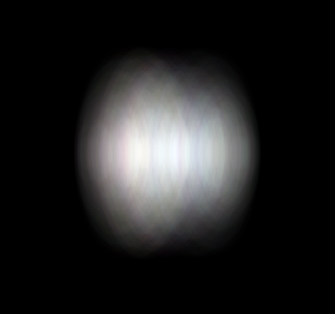
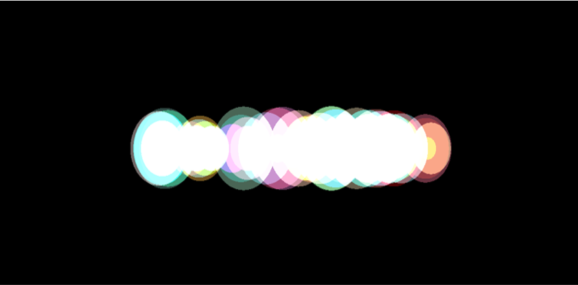
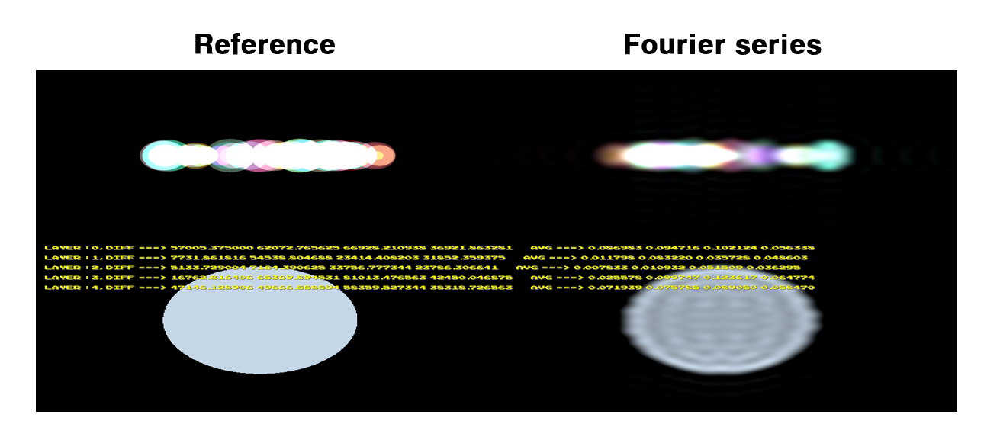

빛 하나를 원이라고 생각했을 때 원이 겹쳐지면서 미분 불가능한 함수를 만드는데 y 값을 빛의 밝기라고 생각하고 동일한 밝기를 가진 빛 두 개가 겹치는 모습을 생각해보면, 빛이 이동하면서 밝기가 겹쳐서 박스 모양의 함수가 생기게 됩니다. 이렇게 위치와 크기, 즉 밝기를 모르는 수천개의 빛들이 중복되었을 때 나타나는 함수를 하나의 미분가능한 함수로 근사가 가능하다면 일일히 빛을 그려주지 않아도 Glare spread function(빛이 펴지는 모습에 관한 함수)을 만들 수 있게 됩니다.
  